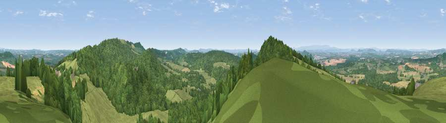

Viewpoint near Dormington
#3796 in England · top 10% of its area beats it · near Dormington · access?Where it is
The exact computed spot (SO 59075 39338). Click the marker for map links.
Public access: no public right of way or access land is recorded at this exact spot — it may be on private land. Computed from Natural England's CRoW access layer and OpenStreetMap rights of way — not the legal definitive map. Always verify locally.
The view, rendered

A 360° render of this exact spot computed from the terrain model, tree cover and land cover — summer colours, afternoon light, calibrated against photographs of famous viewpoints. Real trees, hedges and buildings will differ in detail.
The panorama
Grey silhouette: terrain skyline in each direction (720 bearings, Earth curvature and refraction included). Dashed green: skyline with trees (+15 m) and buildings (+8 m) as obstacles. Blue strip: how far the ground is visible on each bearing.
Where the view opens
Wedge length = distance to the farthest visible ground on that bearing (vegetation-aware). Rings at 10, 25 and 50 km.
What fills the view
53% woodland · 38% grassland · 9% cropland ·
Angular shares of the visible panorama (visual magnitude), not map area. Landscape diversity 0.42 (0–1 Shannon).
Key numbers
More beautiful places nearby
The staircase of upgrades: each row has a higher view potential than everything closer. Driving times are estimates from straight-line distance, calibrated against real road routing — check an actual route before setting out.
| Place | Direction | Drive | Score |
|---|---|---|---|
| Viewpoint near Dormington | WSW · 1 km | ~3 min | 73.0 |
| Seagar Hill | E · 2 km | ~6 min | 82.1 |
| Herefordshire Beacon | E · 17 km | ~30 min | 85.8 |
| Millennium Hill | E · 17 km | ~30 min | 86.9 |
| Worcestershire Beacon | ENE · 19 km | ~32 min | 87.1 |
| Viewpoint near West Quantoxhead | SSW · 107 km | ~132 min | 87.9 |
| Viewpoint near West Quantoxhead | SSW · 108 km | ~133 min | 88.7 |
| Holdstone Hill | SW · 133 km | ~157 min | 90.2 |
52.05091, -2.59821 · source: screening · position refined by local search. Computed location — check access rights before visiting.